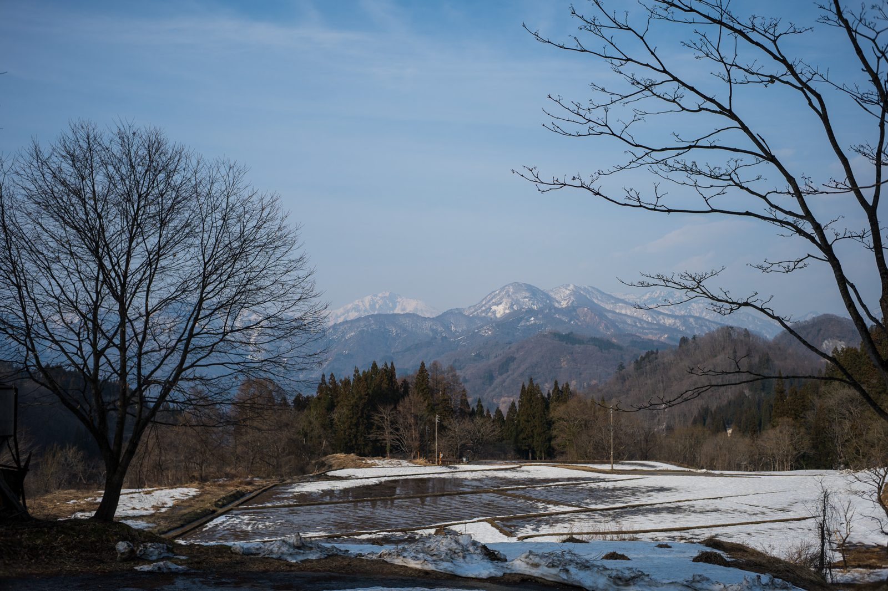
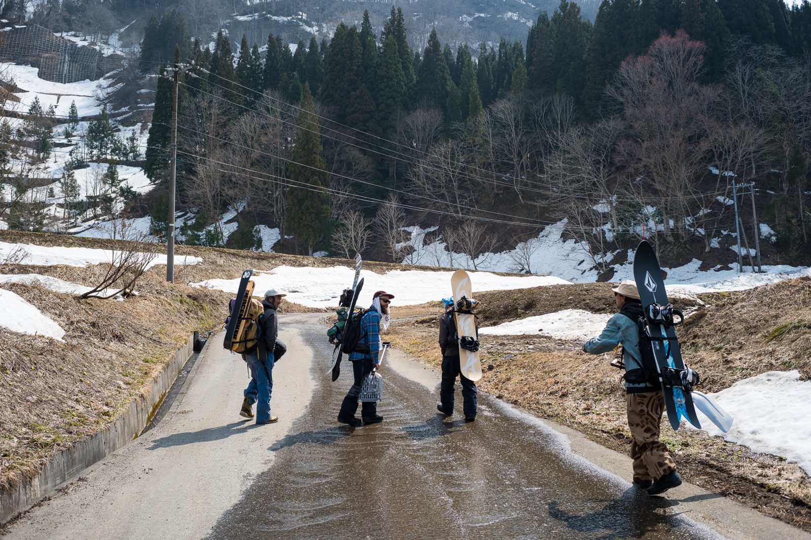
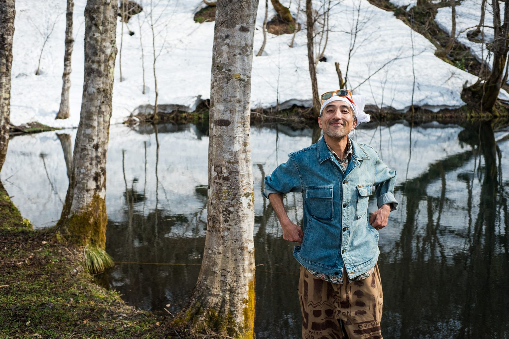
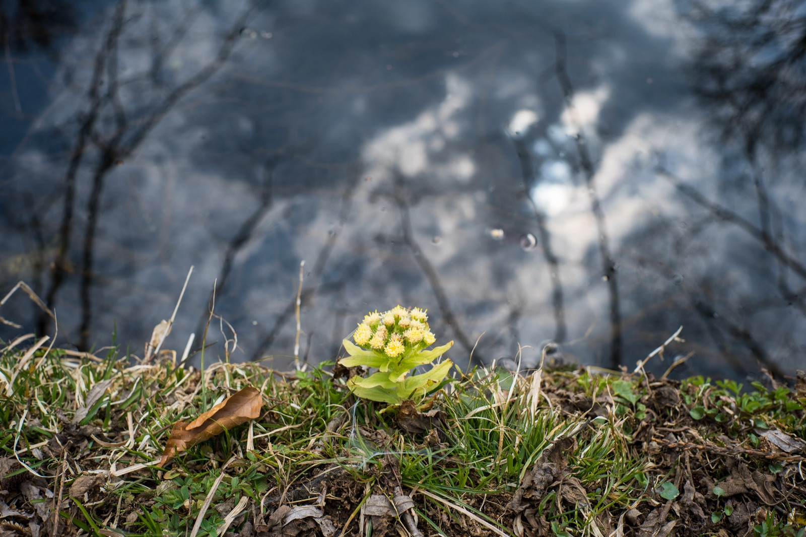

「実は俺ね、20 歳の時一回、死んでるの。」おっとー。いきなりやばいフレーズが。右隣のロックスターさながらの風体した、少年おじさんは喜々としてそう語る。表情は自然体だが本気だ。発言の主は今回の死の先生（death teacher）であるプロスノーボーダー仁科正史その人だ。春の白馬はそのお姫様が闊歩してそうな字面同様明るい陽気であった。そんな空気を正史さんの迷言は体感 3℃ほど凍らせるインパクトがあった。正直一瞬あせる。この企画の成功が、強めのスピリチュアルワードによって、良からぬ方向に大きく転がる気がしたからだ。世間における精神活動のイメージは芳しくない。一方で脳が直感的にゾクゾクっと揺れ動く感覚に陥る。これかもしれない。これなのだ。求めていたことは。こちら側の常識で死という現象を解釈するなら、正史さんの発言は完全にアウトだ。だって生きてるんだもん。目の前で息してる人が、一回死んだと断言しているのだ。生き返ったのか？？咄嗟に脳がその迷言をデリートしそうになる。実に野暮だしダサい。死という未知で体験不可能なその深淵に迫る旅なのだ。death teacher が辿り着いた死の解釈を、たかが１企画の体裁を整えるために封じ込めようとしたのだ。スピリチュアル最高、どんとこいだ。仁科正史ははっきり彼だけの死を捉えている。そしてそれは我々が朧気ながら理解している死とは異なる。それは確かなようだ。
随想記事
2.2.1 仁科 正史 (Pro Snowboarder/Artist)
Place: 長野県大町市・白馬村・小谷村
Words: 宮嶋 孝尚 ( 株式会社まなか )
Photo: 宮嶋 良任 ( 株式会社まなか )
ANSwer：死とは悦びである

平日の月曜日 PM14 時ぐらい。遊びのプロでもある正史さんが、春ならでは新ジャンルの雪遊び［ウォーターライド］を披露してくれるとのことで、その遊び場近くの駐車場で待ち合わせをした。駐車場には、恐らく 40 オーバーのおじさん 3 人（正史含む）＋中学生の男の子が一人笑顔で待ち構えていた。冷静に見るとカオス感高めだ。ちゃんとおかしい。一人はブラジル人で近所のアメリカ人宅の管理人さんらしい。南米のスノーボードチャンピオンだそうだ。これまたバグる。正史さんが少年に自身のアートが描かれたブルーのバンダナをプレゼントしていた。少年は余程嬉しかったのかキラキラ溶けそうな瞳で、早速その青を強く頭に巻いていた。少年だけではない、地元のみんなが正史さんを見つめるその瞳は濁りなく明らかな愛に溢れていた。このことは、彼が長きに渡りこの白馬の地でポジティブなバイブスを与え続けていることを実感させられた。今日この日、正史さんの傍にいるからかもしれないが、東京で窮屈にせこせこ働いてる人間の感覚を捨て、この場に素直に全身を預けてみたくなる。初対面な自分ですらそう思わせる、彼の強さだけではない儚い不確かで独特な生命力の様なものを感じ取らずにはいられなかった。私も完全にその一派に加わった。

おじさんと少年が、自家製のゲレンデを凄い勢いで舞い降りそのまま湖にライドしていく。とてもはしゃいでいる。歓声もこだまする。カッコいいし絶対に楽しい。それは認めよう。しかし改めて言おう。平日ののどかな午後の出来事だ。彼らは働いているのだろうか。学校は創立記念日なのだろうか。そんな心配を他所にひと遊び終わった後、いよいよ正史さんへの死のインタビューが始まった。湖畔のベンチに座りカメラ３台がその様子を見守る。その間きっとレンズ越しにも伝わるほど、彼の生命力にたじろいでしまっている自分がいた。何となく生きてる訳でもなく、それなりの目的志向で時間を粗末にしていない自覚もある。だけどそんな自覚が空しくなるほど、右隣のスターはブレない生き様と共に、今を生きていた。私の 40 年以上擦りこまれた一般常識と言われる価値観の外側で。どっちが正しいとかそんな話をしたい訳じゃない。正史さんもきっと彼なりの苦労もあり、地面を蹴飛ばし星空に涙した日もあっただろう。誰よりも自由に生きることで、犠牲にした物も 1 つや２つじゃない筈だ。しかし、彼は生に執着しそれを存分謳歌している。はっきり私より生きているのだ。これは、彼と対峙した人間しかわからない感覚かも知れないが、そう思わざる負えない程の強烈な敗北感に包み込まれていた。そんな中、正史さんは興奮気味に持論を語り続けている。問いが問いで終わることはない。ざっくり翻訳すれば彼の死生観は、一回死んだのち「死とは悦びである」というステージまで昇華されたようだ。森の奥、遠くの方で鳥の寂しげなさえずりが聞こえた。正史さんの深い黒目には、たじろぐ私がくっきりと映りこんでいる。そんな目で見ないでおくれよ。

帰りの車中、北アルプスの山々の麓を道すがら長野駅に向かう。撮影クルー全員がその雄大な姿に息をのんでいた。圧倒的であることは、照れも駆け引きも生むことなく平等にシンプルな感動を提供してくれる。正史さんの存在や死生観のニュアンスをこれらと絡めてまとめようなんて 10 人いれば 8 人は考えそうなプロットをボーっと考え込んでいた。奇をてらったアプローチが最早馬鹿馬鹿しくなっていたのかもしれない。一旦、考えることをストップさせた。長野駅で食べたかき揚げそばがやけに美味しかった。とりあえず今はそれだけで十分だった。数日後、自分なりの仁科正史と死についてこの原稿を書き上げた。脳がシンプルを欲しているのか、一度筆を進めてみると迷いなく 3 時間ほどで組みあがった。正史さんは、なぜ死を知っているのか。なぜ、死が見えているのか。なぜ、死を言い切れるのか。その疑問を私なりに紐解いてみた。導き出した仮説は、やはりあの強烈な生が彼と彼の視界を司っているというものだ。めちゃくちゃ精神的な視力がいい。そんなイメージだ。詰まる所閃光のごとき眩い生き様が、対岸にある死までも照らしその姿をくっきり映し出している。彼にはそれが見えているのではないだろうか。スピリチュアルごめん。曖昧で色んなパワーバランスの元生きている人間には放てない光。何度も言うがそんな生き方を否定したいわけではない。それぞれである。私はあの日、湖畔の森の下で確かに仁科正史の発光を見た。正史さんそのものである発光の先に、悦びである死が飄々と立ちすくんでいる。理解把握を超えた第六感による死の定義化。彼はその成功を成し遂げたのではないだろうか。この仮説整理によって私自身が「死が悦びである」と腹落ち出来た訳ではない。理解がなんだ！？それで良かろう。ある死の解釈の片鱗に触れられたのだから。今回の旅で大きな一歩が生まれたとすれば、そんな解釈をはっきりと断言する人間がいて、そんな人間に嘘や邪心を全く感じなかった事実だ。私にはまっすぐそう伝えられる喜びだけがはっきりと手元に残った。余談として、あの日正史さんは雪水に咲いていた蕗の薹を採って持たせてくれた。昨日それを youtube でレシピを確認しながら蕗の薹味噌なるものをこしらえてみた。美味しかった。正史一派として白馬と繋がった瞬間だった。生きている。死を巡る旅はこれからも続く。

『「死を、教えてくれ。」4000mのアンデス山脈で死のキワに立った、 Pro Snowboarder/Artist 仁科正史の独自の死生観。「死とは、悦びだ」』
死のキワに3度立ち、自然と対峙してきた仁科正史。彼がたどり着いた平場は、「死は恐怖ではなく、重力からの解放であり生まれ変わりの悦び」という境地だった。
命をかける瞬間が消え、死が遠ざかったと語る仁科。そんな現代において、なぜ私たちは生きづらさを抱えるのか？を考察する。 16年間死の周辺にいた まなか宮嶋 が、問いをぶつけ、彷徨い、自分らしく生き切るため、正解の無い旅に出る。
Place: 長野県大町市・白馬村・小谷村
Door: 2-1 MA Channel / TV
Door: 2-2 MA Channel / Magazine
…… この記事「実は俺ね、20 歳の時一回、死んでるの。」おっとー。いきなりやばいフレーズが。右隣のロックスターさながらの風体した、少年おじさんは喜々としてそう語る。表情は自然体だが本気だ。発言の主は今回の死の先生（death teacher）であるプロスノーボーダー仁科正史その人だ。春の白馬はそのお姫様が闊歩してそうな字面同様明るい陽気であった。そんな空気を正史さんの迷言は体感 3℃ほど凍らせるインパクトがあった。正直一瞬あせる。この企画の成功が、強めのスピリチュアルワードによって、良からぬ方向に大きく転がる気がしたからだ。世間における精神活動のイメージは芳しくない。一方で脳が直感的にゾクゾクっと揺れ動く感覚に陥る。これかもしれない。これなのだ。求めていたことは。こちら側の常識で死という現象を解釈するなら、正史さんの発言は完全にアウトだ。だって生きてるんだもん。目の前で息してる人が、一回死んだと断言し
…… 編集後記を読む3 月末、長野県白馬村・小谷村。重い雪と泥が足元を絡め取って行く、冬の終わり。僕の目の前で、株式会社まなか の社長・宮嶋良任 と 副社長・宮嶋孝尚が、レジェンド・プロスノーボーダーと共に、白馬の奥地を目指し、荒い息を吐き出し歩いている。普段は銀座本社でビジネスを指揮する経営者だが、そんな姿はどこにも無い。汗にまみれあるポイントを目指す、50 前後のオッさんが二人。その隣りのレジェンド・プロスノーボーダー、仁科正史は平然とした足取りで登っていく。小谷村の静寂が包み込む中を登りきって、ようやくたどり着いたポイント。僕は、収録が始まると、カメラの後ろで息を殺して見守った。収録も終盤となり、宮嶋孝尚が、最後の問いを投げかける。「正史さんにとって… 死って何ですか？」短いようで長い沈黙。近くで流れる川の音だけが響き渡る。仁科正史はゆっくりと、何かを深く手探りするように、口を開く。この正解の無いドキュ